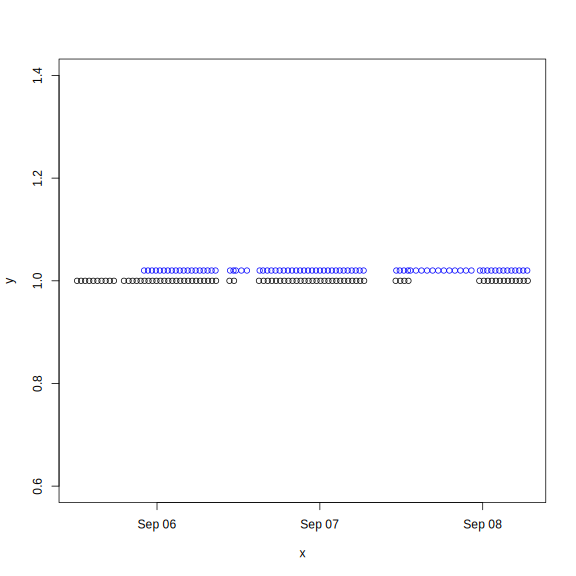
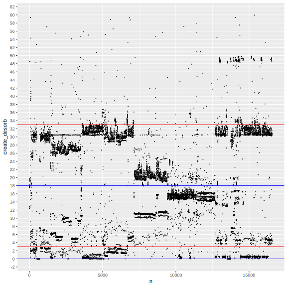
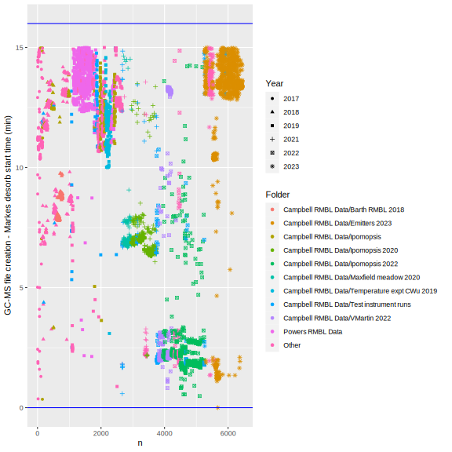
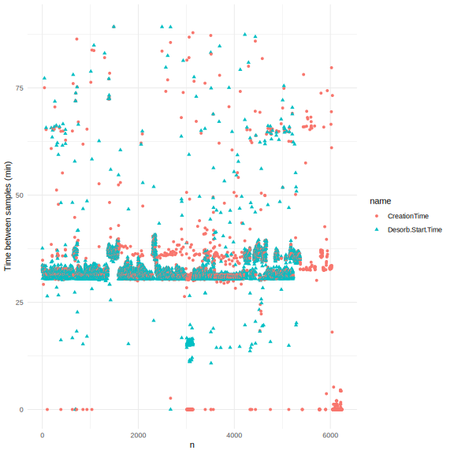
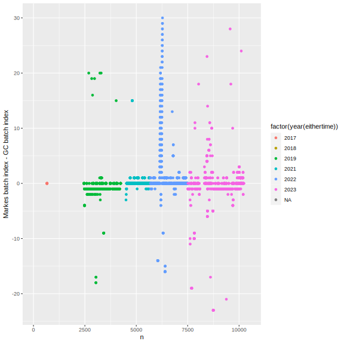
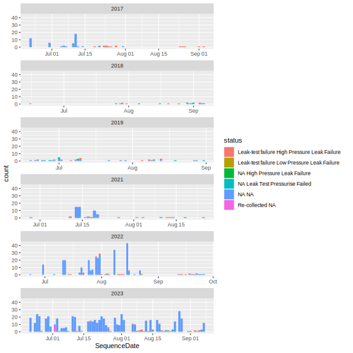

library(tidyverse)
library(knitr)
knitr::opts_chunk$set(comment="", cache=T, warning = F, message = F,
fig.path = "images/", dev="svglite", dev.args=list(fix_text_size=FALSE), fig.height=8, fig.width=8)
#source("markes_sequence.R") #generates the following rda file
filedate <- "230908" #update to YYMMDD date the file was copied off
thisyear <- 2023
load(paste0("output/markes_sequence",filedate,"_",thisyear,".rda"))Generated for 2023 as of 2023-09-08
Fuzzy join diagnostics
sequ.file %>% count(fuzzy_n, year(eithertime)) %>%
kable(caption = "large count is result=NA from no Markes match, eithertime=NA are skips")| fuzzy_n | year(eithertime) | n |
|---|---|---|
| 1 | 2023 | 2143 |
| 1 | NA | 92 |
| 2 | 2023 | 12 |
| NA | 2023 | 32 |
#sequ.file %>% filter(fuzzy_n > 1, fuzzy_n < 100) %>% View()
nrow(sequ.yr); nrow(qgdfiles.yr); nrow(sequ.file) #TODO some duplicates created in the merge[1] 2241[1] 1552[1] 2279plot(y~ x, data=data.frame(x = tail(sort(qgdfiles.yr$CreationTime - minutes(cd_offset)), 80), y = 1))
points(y~ x, data=data.frame(x = tail(sort(sequ.yr$Desorb.Start.Time), 80), y = 1.02), col="blue")
tibble(alltimes = c(qgdfiles.yr$CreationTime, sequ.yr$Desorb.Start.Time),
type = c(rep("qgdfiles",nrow(qgdfiles.yr)), rep("sequ",nrow(sequ.yr))),
year = year(alltimes)) %>%
arrange(alltimes) %>%
mutate(timediff = c(0,as.numeric(diff(alltimes), units="mins")), n=row_number()) %>%
filter(year==2023) %>%
ggplot(aes(x=n, y=timediff, color=type)) + geom_point(size=0.2) +
geom_hline(yintercept=c(0, cd_offset), color="blue") +
geom_hline(yintercept=c(cd_offset-cd_tolerance, cd_offset+cd_tolerance), color="red") +
scale_y_continuous(limits = c(NA,60), n.breaks=30) + geom_rug(size=0.1)
# #check that these two dfs have all the qgd files between them
# setdiff(c(na.exclude(sequ.merged$FileName), qgdfiles.nomatch$FileName), qgdfiles.yr$FileName)
#
# #check if any further matches are possible
# #these desorptions have no file - could be cleaning runs, or not matched correctly
# nofile <- sequ.merged %>% filter(is.na(FileName)) %>% pull(Desorb.Start.Time) %>% sort()
# #times of the files without matches
# nodesorb <- sort(qgdfiles.nomatch$CreationTime)
# tibble(alltimes = c(nofile, nodesorb),
# type = c(rep("sequ",length(nofile)), rep("qgd",length(nodesorb)))) %>%
# arrange(alltimes) %>%
# mutate(timediff = c(0,as.numeric(diff(alltimes), units="mins")), n=row_number()) %>%
# ggplot(aes(x=n, y=timediff, color=type)) + geom_point(size=1) +
# geom_hline(yintercept=c(0, cd_offset), color="blue") +
# geom_hline(yintercept=c(cd_offset-cd_tolerance, cd_offset+cd_tolerance), color="red") +
# scale_y_continuous(limits = c(0,100), n.breaks=30) + geom_rug(size=0.1)
sequ.file %>% drop_na(create_desorb) %>%
mutate(n=row_number(), create_desorb_wrong=as.numeric(create_desorb, units="mins"),#before putting the offset back
create_desorb = as.numeric(CreationTime - Desorb.Start.Time, units="mins")) %>% #after putting the offset back
ggplot(aes(shape=factor(year(eithertime)), x=n, y=create_desorb, color=fct_lump_n(Folder,10))) +
geom_point() + labs(y="GC-MS file creation - Markes desorb start time (min)", shape="Year", color="Folder")+
geom_hline(yintercept=c(0, cd_offset), color="blue") +
geom_hline(yintercept=c(cd_offset-cd_tolerance, cd_offset+cd_tolerance), color="red") +
scale_y_continuous(n.breaks=30) + theme(legend.position = "top") + geom_rug(size=0.1)
sequ.file %>% filter(CreationDate> as.POSIXct("2019-06-19")) %>%
select(CreationTime, Desorb.Start.Time) %>%
map_dfr(~ as.numeric(diff(.), units="mins")) %>% mutate(n = row_number()) %>%
pivot_longer(contains("Time")) %>%
ggplot(aes(x=n, y=value, color=name, shape=name)) +
geom_point() + ylim(c(0,90))+ theme_minimal()+ labs(y="Time between samples (min)")
sequ.file %>% arrange(eithertime) %>% mutate(n=row_number()) %>%
ggplot(aes(x=n, y=markes_GC, color=factor(year(eithertime)))) + geom_point() +
labs(y="Markes batch index - GC batch index")
Calendar
sequ.file %>% drop_na(eithertime) %>%
ggplot(aes(x=SequenceDate, fill=fct_lump_n(Folder,10))) +
geom_histogram(binwidth=1) + facet_wrap(vars(year(eithertime)), ncol=1, scales="free_x") + labs(fill="Folder")
sequ.file %>% drop_na(eithertime) %>% #filter(status !="Desorbed NA") %>%
ggplot(aes(x=SequenceDate, fill=status)) +
geom_histogram(binwidth=1) + facet_wrap(vars(year(eithertime)), ncol=1, scales="free_x")
Annotated with verdicts
tibble(filename = list.files("output/annotated/")) %>%
mutate(data = map(filename, ~ read_csv(paste0("output/annotated/", .x), show_col_types = F)),
startdate = map_vec(data, ~date(min(ymd_hms(.x$sequence.start), na.rm=T))),
enddate = map_vec(data, ~date(max(ymd_hms(.x$sequence.start), na.rm=T))),
cols = map_int(data, ncol),
rows = map_int(data, nrow),
batches = map_int(data, ~length(unique(.x$id))),
filename = str_remove(str_remove(filename, ".csv"), "RMBL GC-MS Data Inventory - ")) %>%
select(-data) %>% arrange(desc(enddate)) %>%
kable(caption = "Hand-annotated TD-GC-MS logs in output/annotated/")| filename | startdate | enddate | cols | rows | batches |
|---|---|---|---|---|---|
| gc2023 | 2023-06-20 | 2023-09-07 | 26 | 2281 | 157 |
| 2022gc220929 | 2022-06-23 | 2022-09-28 | 26 | 1903 | 142 |
| maxfield_all210827annot | 2018-07-16 | 2021-08-26 | 25 | 1568 | 73 |
| ipogc181921 | 2018-08-29 | 2021-08-21 | 26 | 1410 | 60 |
| maxfield_all190807_0815 | 2018-07-16 | 2019-08-13 | 23 | 459 | 26 |